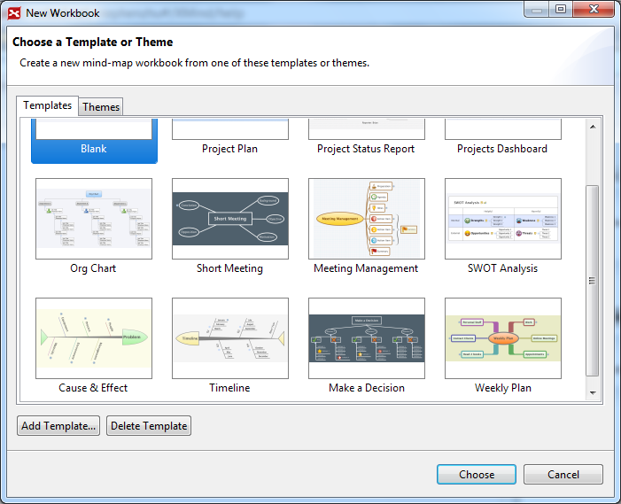
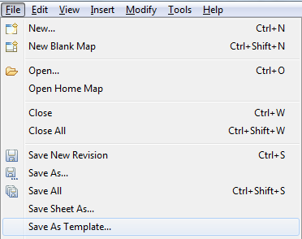

A template in XMind forms the structure of the map, and is saved as a .XMT file. There are twelve basic templates, the Default Blank Mind Map template, Cause & Effect template, Make a Decision, Meeting Management template, Org Chart, Project Plan, Project Status report, Projects Dashboard, Short meeting, SWOT Analysis template, Timeline template, and Weekly plan.
To use template:
- Select "File -- New" from menu
- In the coming dialog, choose your prefered template and theme

In addition to the prepared templates, you can also build and save your own style templates. Here's how,
- Build a map with a structure
- Set your prefered styles
- Topic style, such as font, shape, color.
- Line style, such as shape, color.
- Map style, such as wallpaper, background color, legend.
- Choose "File > Save as Template..." from menu.
- Select the path and save your template.

Add your templates into XMind:
- Select "File -- New".
- Click "Add template" in the coming dialog
- Select your template, then add into xmind
Then next time, you can create mind map with your own templates!